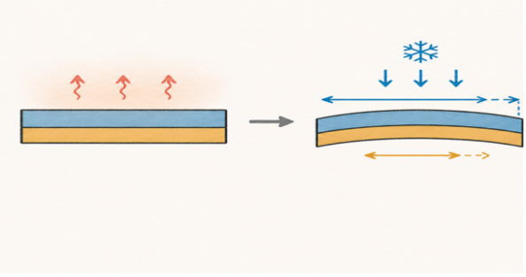
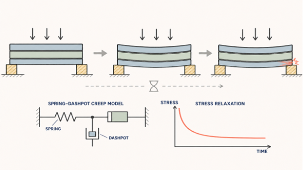
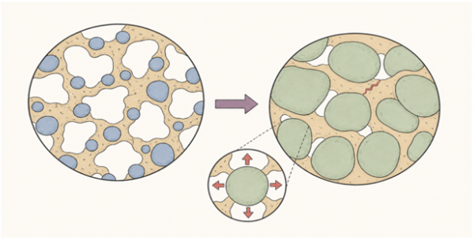
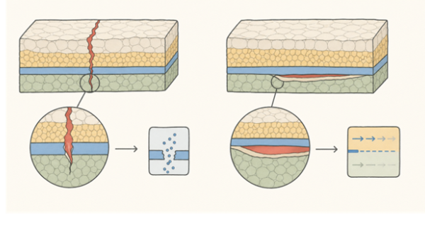
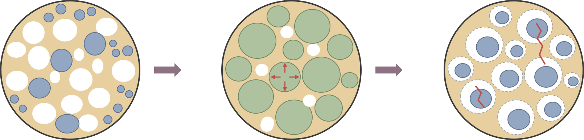
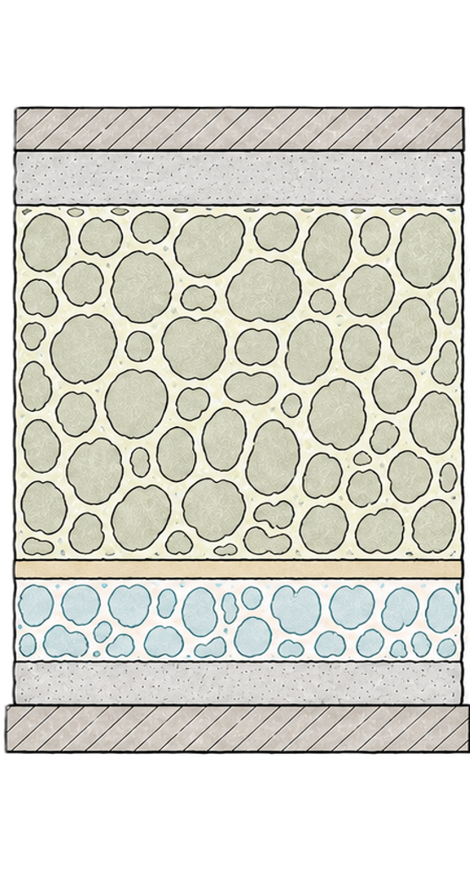

Redox and thermomechanical mechanisms
Mechanisms considered in mechanical modeling of solid oxide cells include thermal expansion mismatch, stress relaxation, reduction/oxidation-induced electrode deformation and cracking of adjacent electrolyte layers.
Thermal and mechanical behavior


Microstructure and fracture




These mechanism diagrams are schematics and should not be interpreted as quantitative simulation fields.